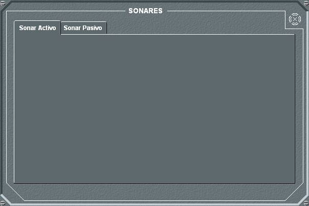
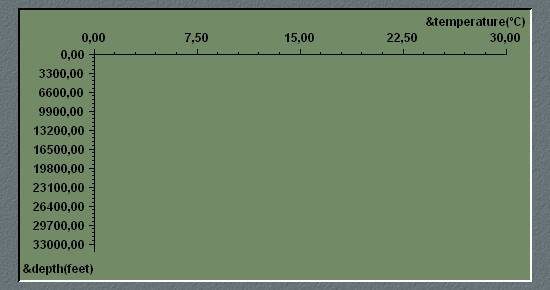
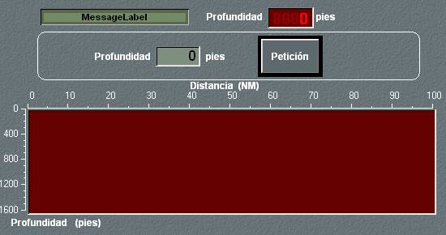

Sonar Pasivo

El panel de detalle general de sonar permite seleccionar entre sonares activos o pasivos mediante unas solapas. Al seleccionar la opción sonar pasivo se muestra el siguiente panel.
En el panel de detalle principal del sonar pasivo se muestra la lista de sonares pasivos en la unidad, y la siguiente información para cada uno de ellos:
- Estado del Sonar: Indica si el Sonar Pasivo está encendido (verde encendido), apagado (verde apagado), desplegándose / recogiéndose (amarillo) o dañado (rojo). Pulsando este botón se enciende / apaga el equipo, sin tener que abrir el panel de configuración del sonar. Ver botón ON / OFF del panel de configuración.
- Nombre del Sonar: Indica el nombre asignado al Sonar.
- Tipo del Sonar: Indica el tipo de Sonar, por ejemplo si es TAS, HULL, etc.
- Profundidad: Muestra la profundidad de operación del Sonar.
- Detecciones: Muestra la lista de detecciones de sonar pasivo, hasta un máximo de 99, de más a menos recientes. Esta lista incluye, para cada detección, los siguientes datos:
- TN: Número de traza asignada a la detección en la presentación táctica.
- H.Adq.: Hora, minuto y segundo de la adquisición de la detección.
- H.Pérd.: Hora, minuto y segundo de la pérdida de la detección.
- Bab-Est Dem.: Demora Babor y Estribor (separadas por un guión) en grados de la detección. Si el Sonar es tipo TACTAS, no es telémetro y no tiene Capacidad Interceptador se calcula la demora ambigua como la simétrica de la demora de la detección con respecto a la línea imaginaria que une la popa y sonar remolcado. En los casos en los que se calcula la Demora Ambigua, se presentan las dos demoras (Real y Ambigua) dependiendo de la banda. Si no se calcula la Demora Ambigua, se presentará sólo la Demora Real, en la banda correspondiente.
- Ale/Acer: Indica si la detección se aleja o acerca a la unidad propia. Este dato se presenta con un minuto de retraso tras la adquisición del contacto, si el sonar es telémetro y la detección es de banda ancha. En caso contrario, este dato se presentará a los seis minutos.
- Clasificación: En el caso de haberse realizado una identificación, indica la clasificación de la detección. Este dato sólo está disponible si el sonar es TACTAS, no es Interceptador y si la detección es de banda estrecha. La clasificación se presenta con un retraso de cinco minutos tras la adquisición del contacto. En este campo, también se indica si la detección se ha identificado como un Torpedo, mostrando la palabra “TORPEDO” en vez de la clasificación. Para se produzca esta identificación, es necesario que el torpedo se encuentre a menos de 10.000 yardas, excepto en sector popel. Cuando se produce una detección de este tipo, se acompaña con una alarma visual (led en el panel general y en este diálogo, sobre la lista de detecciones) y acústica.
- Clase: En el caso de haberse realizado una identificación, indica la clase de la detección. Este dato sólo está disponible si el sonar es TACTAS, no es Interceptador y si la detección es de banda estrecha. La clase se presenta con un retraso de seis minutos tras la adquisición del contacto. Cuando la detección se corresponda a una explosión de torpedo o carga (ver Modelística – Armas – Torpedos / Cargas) en este campo se mostrará la leyenda “EXPLOSIÓN” desde la adquisición del contacto.
- Distancia: Indica la distancia en yardas de la detección. Si el sonar es telémetro y la detección es de banda ancha, se muestra con un retraso de un minuto respecto tras la adquisición de la detección y con un error que depende de la configuración del equipo (preparación). En cualquier otro caso se muestra con un retraso de seis minutos tras la adquisición, y con error de +/-10%, decreciendo un 20% cada seis minutos.
- Velocidad: Indica la velocidad de la detección. Si el sonar es telémetro y la detección es de banda ancha, se muestra con un retraso de dos minutos tras la adquisición de la detección. En cualquier otro caso el retraso será de seis minutos. Su error es de +/-30% decreciendo un 20% cada seis minutos.
- Rumbo: Indica el rumbo de la detección. Si el sonar es telémetro y la detección es de banda ancha, se muestra con un retraso de dos minutos tras la adquisición de la detección. En cualquier otro caso el retraso será de seis minutos. Su error es de +/-30º decreciendo un 20% cada seis minutos.
- Ley de Variación: Indica la ley de variación de la demora del contacto, en grados por minuto. La estimación de la ley de variación se presenta con un retraso de un minuto tras la adquisición de la detección.
- Frecuencias: Se muestran cada una de las frecuencias del contacto para las que se ha obtenido un exceso de señal positivo. Estas frecuencias pueden ser la de banda ancha o las cuatro de estrecha definidas en la firma acústica de la unidad detectada (aunque para banda ancha, el sonar evalúa en la frecuencia intermedia de su margen de operación). Si el sonar es interceptador también podrá obtener las frecuencias de trabajo de los sónares activos de la unidad detectada.
- Análisis CAS – Demon: Hélices / Palas / RPM: Indica el número de hélices, tipo de hélice, número de palas y RPM de las hélices de la detección. Este dato sólo se obtiene si la detección es de banda ancha y el contacto está a una distancia menor o igual a mil yardas (configurable en Galeon.ini).
- Análisis Acústico – Lofar: Efectos hidrofónicos: Se muestra la lista de los distintos efectos hidrofónicos detectados del contacto.
- Configurar: Pulsando este botón se accede al panel de configuración del Sonar, en el que pueden seleccionarse cuatro opciones mediante solapas: Parámetros, Traza Batitérmica, Intensidad Batitérmica y Curva TL / Distancia.
- Encender / Apagar el Sonar, pulsando el botón ON/OFF.
- Desplegar el Sonar, si se trata de Sonar TAS o Calable. Introduciendo un valor de longitud de cable y pulsando el botón Petición, se inicia el despliegue del sonar, hasta que el cable tenga la longitud solicitada. En el campo Profundidad se indica en cada momento la profundidad a la que está calado el sonar. Está opción está deshabilitada para sonar HULL. En el caso de sonares calables, solo se puede iniciar el despliegue si el helicóptero vuela con velocidad menor de 4 nudos en cuyo caso se considera que la unidad está en vuelo estacionario.
- Recoger el Sonar, si se trata de Sonar TAS o Calable. Una vez que el sonar está desplegado, puede recogerse pulsando el botón Recoger.
- Frecuencia del contacto.
- Nivel de ruido del contacto
- Profundidad del contacto
- Profundidad de calado del Sonar.
Nota: Todos los tiempos de retraso que se indican para la presentación de los datos que se describen a continuación son configurables en Galeón.ini.
Estos datos tienen un cierto error que depende de la configuración del equipo en Preparación.
Seleccionando una detección y pulsando en el botón Datos, se le muestra al operador el diálogo de detalles de la detección:

Los datos Número, Hora Adquisición, Hora Pérdida, Demora Babor y Estribor, Acerca o Aleja, Clasificación y Clase, coinciden con los ya descritos para las lista de detecciones, salvo que en el campo Clasificación no se indica cuando la detección se ha identificado como un Torpedo.
El dato de Doppler no se muestra para el Sonar Pasivo.
El resto de campos se describe a continuación:

Desde el panel de detalle de Parámetros del sonar pasivo pueden realizarse las siguientes acciones:
Si se trata de Sonar TAS o Calable, cuando el sonar está totalmente recogido no se podrá encender, dando un mensaje de error si se intenta. Si se pulsa ON mientras que el sonar se está desplegando, éste quedará en estado de STAND BY ON (led amarillo) hasta que esté totalmente desplegado, pasando entonces a estado ON (led verde) automáticamente. Si el sonar se despliega y no se solicita su encendido, se mantendrá apagado y desplegado a la espera de que el operador lo encienda, no encendiéndose automáticamente en este caso. Si el sonar está totalmente desplegado y se solicita encender, se encenderá directamente.

Desde el panel de detalle de Traza Batitérmica puede consultarse la curva Temperatura / Profundidad (Traza Batitérmica) para la zona donde se encuentra la unidad propia.

Desde el panel de detalle de Intensidad Batitérmica puede consultarse el diagrama de intensidad batitérmica respecto a la distancia / profundidad, para diferentes valores de calado del sonar.
El propósito de esta ventana es proporcionar al Alumno una herramienta intuitiva que le permita visualizar los factores de probabilidad de detección de sonar en función de las condiciones batitermográficas de la zona ambiental en la que se encuentra.
Para ello se introduce un valor de profundidad en el campo correspondiente y se pulsa el botón Petición. En el diagrama se muestra la intensidad batitérmica para dicha profundidad de calado de sonar, iluminando cada punto (distancia, profundidad) con un nivel de brillo proporcional a la intensidad batitérmica en dicho punto.
Introduciendo un valor de profundidad igual al real de calado del sonar, que se muestra en la parte superior del panel, se obtiene el diagrama de intensidad batitérmica actual.
Desde el panel de detalle de Curva TL / Distancia puede consultarse la curva TL / Distancia para distintas combinaciones de los siguientes parámetros:
Una vez introducidos los datos, al pulsar el botón Petición, se recalcula la curva TL / Distancia y se presenta en pantalla. Sobre la curva TL / Distancia, se representa también el FOM (SE = FOM – TL). Si la velocidad de la unidad es superior a la máxima velocidad de operación del sonar, no se representa la curva TL / Distancia, y se muestra un mensaje de error.
Si el equipo está dañado, no se podrá realizar ninguna operación sobre él.